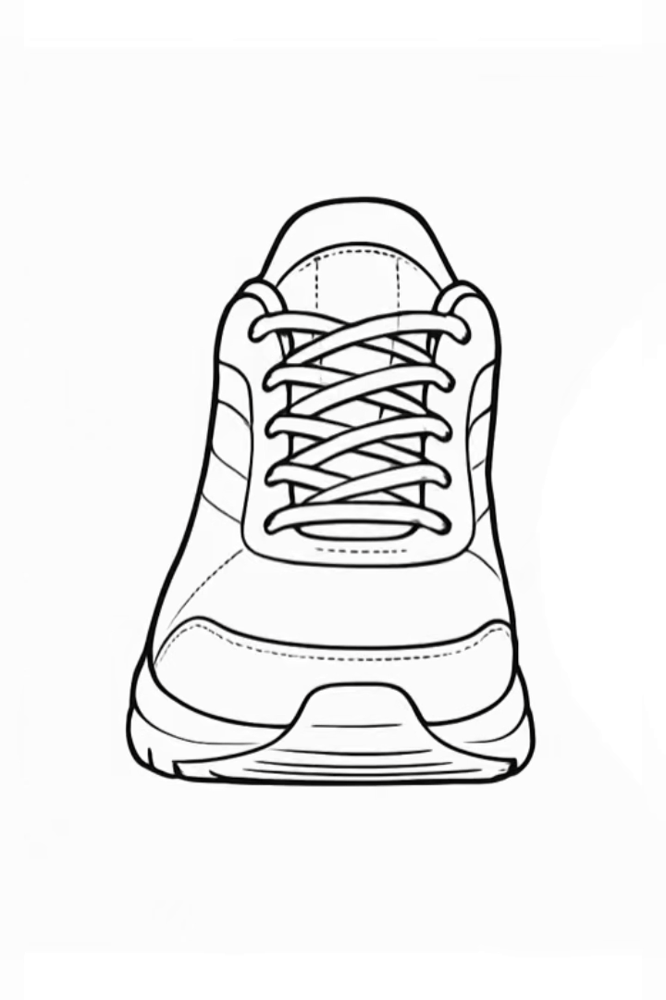
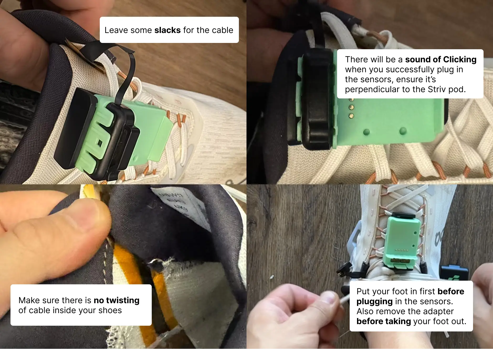

Introduction
Welcome to your Striv Smart Insole! This advanced wearable device provides real-time biomechanical analysis of your running and walking gait. The insole contains pressure sensors, motion sensors, and environmental sensors to deliver comprehensive data about your movement patterns.
Getting Started
Helpful Resources
- Hardware Setup Video – Must Watch before your first run!
- iOS App – Download for iPhone
- Android App – Access Open Testing for Android
- Software Status (Current Version and Date)
What's in the Box
- Striv Smart Insoles (Left and Right)
- Removable battery pod
- Battery charging dock
Start Using Your Insole
Placement
- Remove original insole and insert Striv Insole, then thread cable over the tongue of the shoe (Tip: thread cable over tongue of the shoe)

- Make sure cable is flat and insert original insole, then mark down where the insoles overlap
- Remove both insole and tape them together in the back
- Place insoles back into your runners and thread cable over the tongue of the shoe
- Important: Put your foot in before Connecting to Striv Pod
- Connect to Striv Pod (Tip: leave the cable some slack room to prevent ripping from tension)
Final Check Before Starting
Connecting Your Insole
First-Time Setup
- Put on your smart insole as described above
- Enable Bluetooth on your smartphone.
- Download the Striv app from the App Store or Google Play Store.
- Open the Striv app and create an account or log in to your existing account.
- Go to "Start Runing", then click "Start to Run" to connect your insole.
- The top right corner of the screen will show the connection status of your left and right insoles.
Charging Your Insole
- Remove the battery pod from your insole.
- Place the battery pod in the provided charging dock.
- Connect the charging dock to a power source (max 5V/1A).
- A full charge takes approximately 2-3 hours.
- The light will turn green charging is complete.
- Reinsert the charged battery pod into your insole.

Run Now, Sync Later
Convenient Feature: After your first calibration, you can start running immediately without connecting to the app. Your data will sync when you connect later!
Note: This feature is currently only available for iOS users.
How It Works
- If you've previously calibrated your insoles:
- Simply put on your shoes with the insoles
- Start running - even if the LED is blinking blue (indicating no Bluetooth connection)
- LED Behavior: The blue blinking will automatically stop after approximately 1 minute of running activity, indicating the insole has entered data collection mode
- Your insole will collect data during your run even without phone connection
- After your run:
- Open the Striv app
- Go to your run History and Sync your data
- During sync, the LED may briefly show activity as data transfers
- Blinking Blue → OFF: When you start running, the blue blinking (disconnect indicator) will stop after 1 minute, indicating the system is recording data
- LED remains OFF during run: Normal operation in standalone data collection mode
- Blinking Yellow: Low battery warning - complete your run and charge soon
This feature only works after you've completed the initial calibration process. First-time users must still connect and calibrate their insoles before running.
Calibration Process
For optimal performance, your Striv insole needs to be calibrated to your specific foot pressure patterns:
- After connecting to Bluetooth, the insole will automatically enter calibration mode.
- The LED will display a gradual transition from red to green during calibration.
- Stand normally with your weight evenly distributed on both feet.
- Maintain this position for approximately 5 seconds until calibration is complete.
- The LED will turn off once calibration is successful.
Calibration Tips
- Ensure you're standing on a flat, level surface.
- Distribute your weight evenly between both feet.
- Remain still during the entire calibration process.
- Recalibration is recommended when:
- Switching between different types of footwear
- After not using the insole for an extended period
- If you notice inaccurate readings
Understanding LED Indicators
Your Striv insole uses LED colors and patterns to communicate its status:
Note: The LED indicators follow a priority order. If multiple conditions exist simultaneously, the highest priority condition will be displayed:
Low battery > Bluetooth disconnected > Calibration > Low sampling rate
Visual LED Guide
Maintenance and Care
Cleaning
- Remove the insole from your shoe.
- Wipe gently with a damp cloth.
- Allow to air dry completely before reinserting.
- Do NOT machine wash or submerge in water.
Battery Management
- A full charge typically lasts 15-20 hours of active use.
- When the LED blinks yellow, remove and charge the battery pod.
- To preserve battery life, remove the battery pod when not in use for extended periods.
- Use only the provided charging dock and ensure power source is 5V/1A or less.
Storage
- Store in a cool, dry place.
- Avoid extreme temperatures.
- Do not bend or fold the insole.
Troubleshooting
Insole Won't Connect
- Ensure Bluetooth is enabled on your smartphone.
- Verify the insole is charged and powered on.
- Restart the Striv app.
- If problems persist, try restarting your smartphone.
Calibration Issues
- Ensure you're standing still during calibration.
- Check that the insole is properly positioned in your shoe.
- Try recalibrating in a different location.
- If calibration repeatedly fails, contact customer support.
Inaccurate Data
- Recalibrate the insole.
- Ensure the insole is properly positioned in your shoe.
- Check for any physical damage to the insole.
LED Continuously Blinks Blue
- Check that Bluetooth is enabled on your smartphone.
- Verify the Striv app is open and running.
- Try moving your smartphone closer to the insole.
Frequently Asked Questions (FAQ)
What's in the box?
- x pairs of Striv insoles (depending on your order)
- Battery pods
- Striv Pod
- Foot clips
- Charging dock + cable
Is there a left and right side for the sensors?
Yes. Look for "L" and "R" on the adapter — this indicates which foot and orientation.
How do I start a run?
- Make sure both pods are fully charged and connected.
- Open the app → Tap "Start Running" → Wait for both L/R to show as connected.
- Tap "Start" → Run → Tap "End Run" to save.
My pod isn't connecting — what should I do?
- Make sure battery it's charged and clicked into the adapter fully.
- Make sure the sensor adaptor is fully connected and you hear a sound of clicking when you push it in.
- Avoid twisting or pulling the cable.
- Try restarting the app and reconnecting via the "Start Running" screen.
If it still doesn't connect, contact us or fill out the debug form.
My calibration doesn't seem to work.
- Open "Insole Status" in the app — check for pressure bars.
- Ensure you're standing still during calibration.
- Try unplugging/replugging the adapter and restarting the app.
If still stuck, contact us or fill out the debug form!
Can I use the sensors with my own insoles?
Yes — sensor-only kits are designed to go under your existing insoles.
One of my parts is missing or damaged — what now?
Please fill out our After-Sales Service Request form and we'll help resolve the issue.
Technical Specifications
- Battery: Rechargeable lithium-ion
- Battery Life: 15-20 hours of active use
- Connectivity: Bluetooth Low Energy (BLE)
- Sensors: Pressure array, IMU (motion), barometric (elevation), temperature
- Water Resistance: Splash resistant (not waterproof)
- Temperature Range: -40°C to +85°C (-40°F to +185°F)
Support and Contact
For additional support:
- Visit our website: www.striv.run
- Email: info@striv.run
Account Management
To delete your account:
- Open the Striv app
- Navigate to Personal Settings
- Select "Delete Your Account"
Warranty Information
Your Striv Smart Insole comes with a limited one-year warranty covering manufacturing defects. Please register your product on our website to activate your warranty.
Disclaimer
Medical Disclaimer: The Striv Smart Insole is not a medical device and is not intended to diagnose, treat, cure, or prevent any disease or health condition. The information provided by the device and companion app is for informational and recreational purposes only.
Accuracy of Information: While we strive to provide accurate biomechanical data, the measurements and analyses provided by the Striv Smart Insole should not be considered as precise as clinical-grade equipment. Environmental factors, improper calibration, or incorrect usage may affect the accuracy of the data.
Consultation with Healthcare Professionals: Always consult with qualified healthcare professionals regarding any medical questions or concerns. Do not make changes to your exercise routine, footwear, or treatment plans based solely on data from the Striv Smart Insole without consulting appropriate medical professionals.
Assumption of Risk: By using the Striv Smart Insole, you acknowledge and assume all risks associated with physical activity and the use of the device. Striv Technologies is not responsible for any injuries or damages that may occur during use.
Privacy and Data: Please refer to our Privacy Policy for information on how we collect, use, and protect your data. By using the Striv Smart Insole and companion app, you consent to the data practices described in our Privacy Policy.
Product Updates: Specifications, features, and capabilities of the Striv Smart Insole may change with firmware or app updates. This manual represents the product at the time of publication.